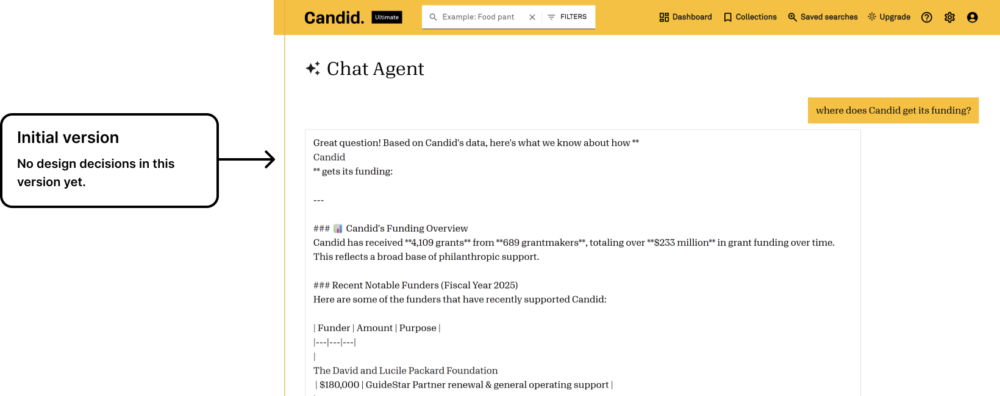
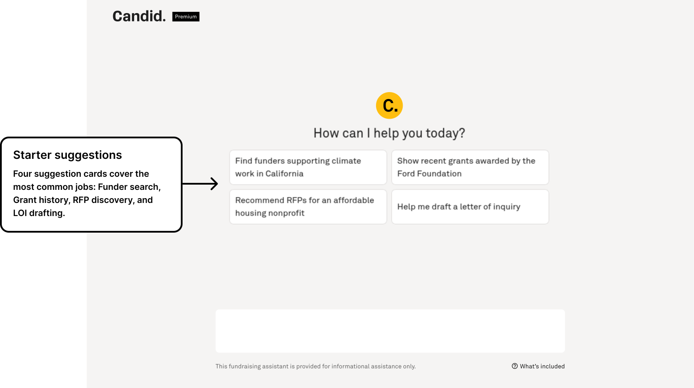
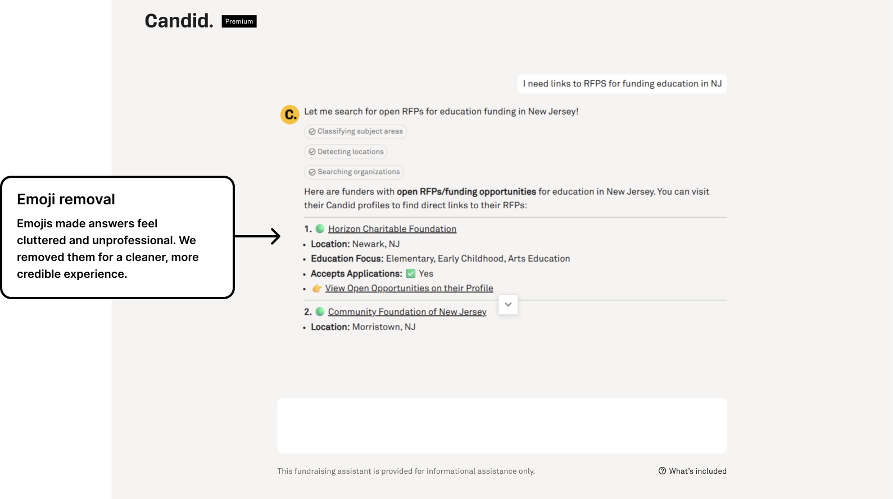
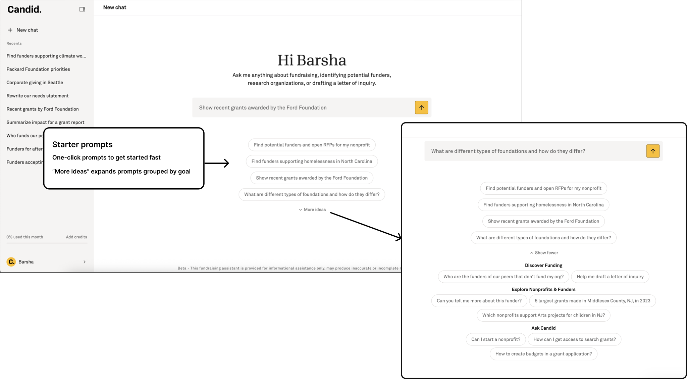
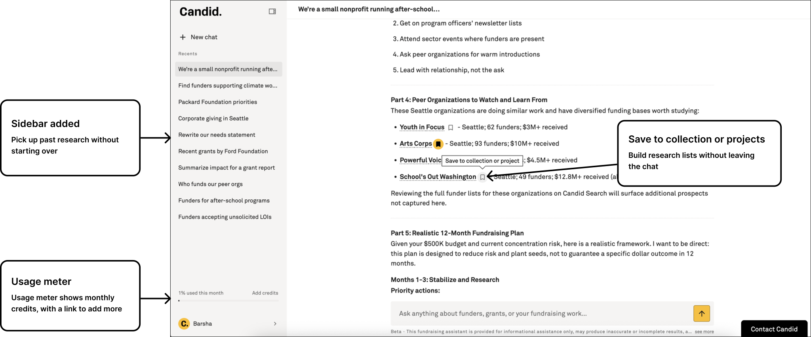
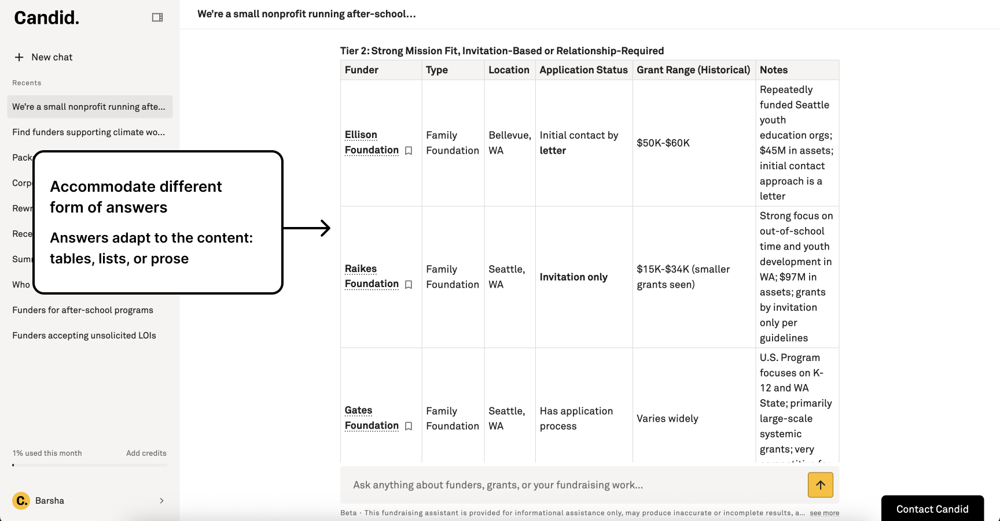
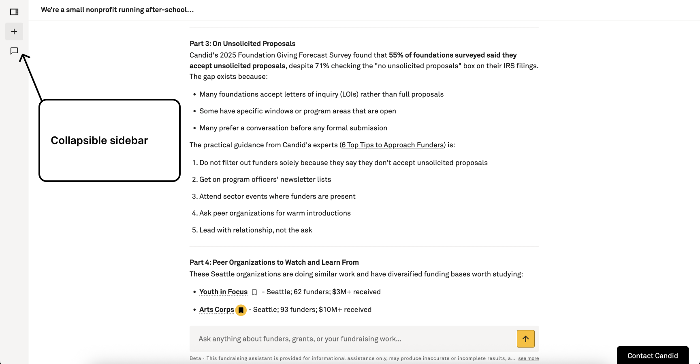
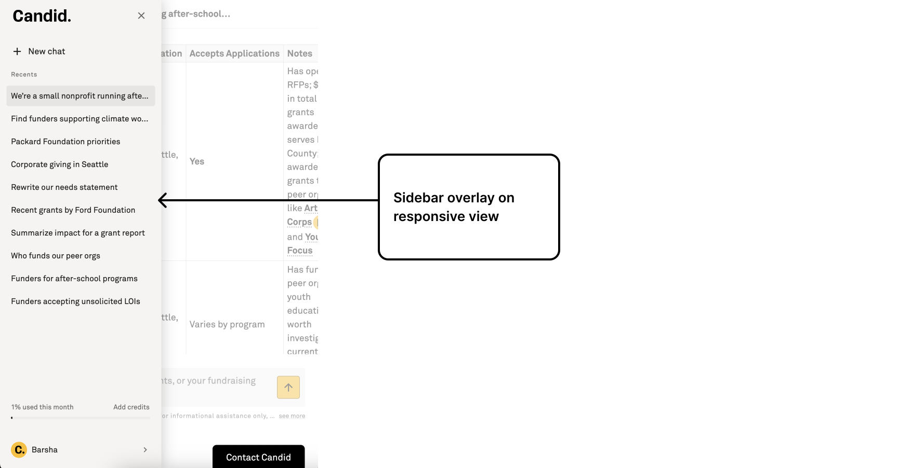

Version 1
Minimal chat
A bare prompt box embedded in the existing Candid shell. Proved demand for in-context AI but left users staring at an empty input with no guidance on what to ask.

Case study · 2026 · Candid · AI product
Built to save fundraisers time on research
A conversational AI inside Candid that helps nonprofits find funders, grants, and RFPs through semantic search, get tailored recommendations, draft letters of inquiry, and explore peer organizations and their funding sources. View the live product.
Nonprofit fundraisers already trusted Candid's databases, but keyword search forced them to know the right terms before they could discover opportunities. The assistant turns natural questions into structured research: funders, open RFPs, grant history, and Candid's own knowledge base, returned in a format busy development staff can act on quickly.
What it does
Fundraisers ask in plain language. The assistant searches Candid's nonprofit, funder, and grants data, then returns answers you can scan, verify, and use in your workflow.
Research who gives, who receives, and what Candid already knows about the sector.
Move from open-ended research to a shortlist you can pursue.
Start outreach faster instead of from a blank page.
Metrics (Beta release)
Since public beta in 2026.
Research and drafting queries in beta.
Up from 8.6 at launch; target is 30.
1,096 prompts in the same window.
01 · Problem
Candid's search tools are powerful but assume you already know what to look for. Small development teams needed a way to ask questions in plain language and get actionable answers back.
Fundraisers juggle prospect research, RFP scanning, LOI drafting, and learning how Candid's products fit together. Boolean filters and separate tools split that work across tabs and training sessions. The assistant needed to collapse those jobs into one conversation without overwhelming users with unstructured AI output.
Design goal: Reduce fundraisers' time on research. Make AI feel like a colleague who knows Candid's data, returns scannable results, and stays out of the way when the user just needs a quick answer.
02 · Evolution
Each version tested a different onboarding hypothesis. User feedback and NPS tracking pushed us toward a cleaner chat pattern with starter prompts and calmer responses.
A bare prompt box embedded in the existing Candid shell. Proved demand for in-context AI but left users staring at an empty input with no guidance on what to ask.

Added suggestion cards on the empty state so users could jump in with example queries. Responses used status chips (classifying subject areas, detecting locations) and structured funder lists. We removed emojis from answers after feedback that decorative icons added cognitive load without aiding comprehension.


Shifted to a dedicated chat layout with recents, usage meter, and a persistent input bar. Aligned with familiar assistant patterns users already know from consumer AI products, while keeping Candid branding and data citations in the response body.

Features added

Responsive views



03 · Launch
We built and tested the assistant inside Candid before opening it up more broadly. Today it lives on its own product page and inside Candid Search, where subscribers and Gold Seal nonprofits can use it in their fundraising workflow.
Candid also published a public landing page, how-to guides, and clear AI usage policies so people know what the tool does and how their data is handled. The core message is simple: answers come from Candid's grants and nonprofit data, not from a generic chatbot guessing about philanthropy.
Public links
04 · Impact
NPS climbed from 8.6 at launch to 22.5 in the most recent measurement window, trending toward a 30-point success target. Beta survey responses echo the time-savings goal in users' own words.
It's suggested quite a few institutions, and I've applied to two of them, that I was not able to find using the standard search function.
The ability to have this information quickly assembled and summarized by the bot.
Helpful and likely a tool we would look to utilize going forward.
It reduces the amount of time it takes for a nonprofit to find the resources it needs to fund its work.
Even a few minutes yesterday was lightyears ahead of the old search function.
I love the fundraising assistant. It's so much faster than what I used to have to do to find prospects in Candid search.
Helpful for identifying funders and drafting LOIs. Overall, a useful tool.
Made it very easy to weed out what we don't qualify for. Love it.
I like that you can go straight to the foundation's page on the system.
Super easy to use.
Search with the assistance of AI.
Additional positive feedback came through customer support and user interviews. Quotes are from beta survey responses; organization names are withheld because the product remains in beta.